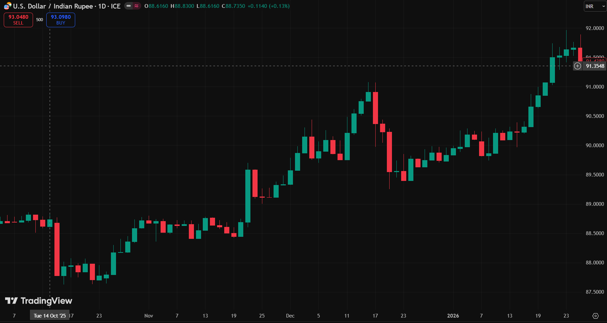
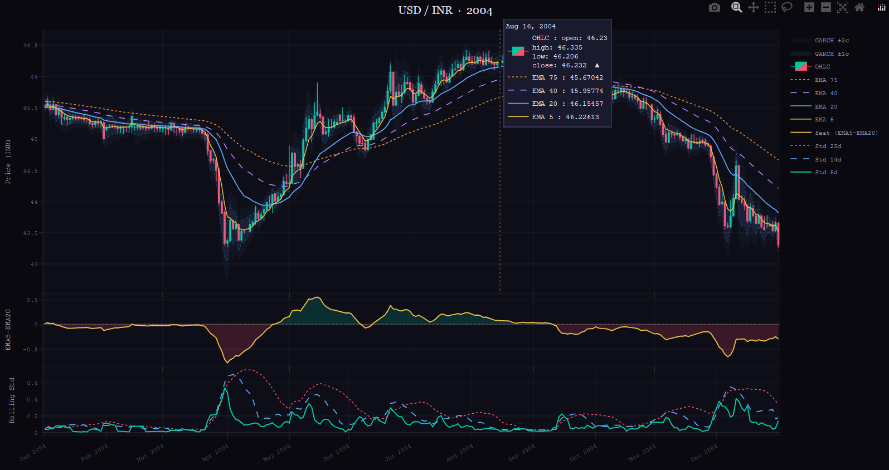

Problem Statement (1/2)
Predicting USD/INR Closing Price for a Quant Strategy
Objective & Importance
Predict the next-day (T+1) USD/INR daily closing price and convert forecasts into reliable long/short signals for a systematic trading strategy.
Even a small directional edge improves PnL after costs in this high-liquidity FX pair. Accurate forecasts are critical for hedging (importers/exporters) and risk budgeting.
Market Context & Dynamics
Technical Challenges & Constraints
Success Criteria
Model Metrics
Directional Accuracy
RMSE / MAE / MAPE
AUC on Up/Down signals
Strategy Metrics
Net PnL & CAGR
Sharpe & Sortino Ratios
Maximum Drawdown
Hit Ratio (Win Rate)
Project Deliverables
Problem Statement (2/2)
Core Idea, Dataset & Challenges / Nuances
One-line Problem
Predict next-day (T+1) USD/INR closing price using historical OHLC data (2003 – 2023) to generate actionable trading signals.
Core Idea
Financial markets are noisy, nonlinear, and weakly predictable. The goal is not perfect prediction but extracting a small, consistent edge from structured features.
Why This Matters
Dataset
Challenges / Nuances
1. High Noise, Low Signal
2. Non-Stationarity
3. Lagging Nature of Indicators
Dataset Description
USD/INR Daily Time Series Data (2003–2023)
1. OHLC Data (core structure)
Each data point = one trading day with four key price levels:
O Open → price at market open
H High → highest price of day
L Low → lowest price of day
C Close → final price of day
👉 These capture intraday price dynamics and volatility
2. Adjusted Close (if included)
Accounts for structural changes in the price series. Adjusted for dividends & splits (more relevant in equities). For FX (USD/INR): usually same as close, but included for completeness.
3. Why OHLC is Powerful
Captures
Enables construction of
4. Time-Series Nature
Data is sequential & dependent — observations are not i.i.d. Requires chronological splitting and no random shuffling.
USD/INR — Daily OHLC Candlestick Chart
LIVE
Source: TradingView · FX_IDC:USDINR · 1D
Shows: trends · volatility clustering · regime changes
Efforts & Methodology (1/4)
EDA & Preprocessing — Feature Overview
📊 Feature Engineering — Visual Overview

Missing Data
Forward-fill holidays; drop non-trading gaps. Ensures no artificial discontinuities enter the feature set.
Stationarity
ADF test confirms price levels are I(1); models operate on returns, which are stationary.
Feature Engineering
Lag returns, EMA spreads, GARCH σ, candle body — 10 features total across all models.
Train / Test Split
Chronological: 2003–2020 train / 2021–2023 test. No data leakage across the boundary.
Model Used (1/4)
Statistical Model — Initial Features + Direction
1. Trend Spread
Captures short-term vs long-term trend. A positive spread signals upward momentum; negative signals weakening price relative to its recent average.
2. Trend Change
Measures acceleration of trend, not just level. Momentum is often more predictive than the raw spread — a widening gap has more signal than a stable one.
3. Rolling Volatility (Regime Detection)
Classifies: HIGH / MEDIUM / LOW volatility regimes. The ordering of std₅, std₁₄, std₂₅ reveals whether volatility is expanding or contracting.
4. GARCH Volatility
Captures time-varying conditional volatility. Unlike rolling std, GARCH weights recent shocks more heavily, making it better suited for predicting near-term move magnitude.
Direction Model (EMA Threshold)
Parameters β, γ optimized over 2003–2020 to maximize directional accuracy. The asymmetric thresholds allow the model to be more or less aggressive on each side of the market.
Parameter Optimization (β, γ)
Re-optimization prevents the thresholds from becoming stale in new market regimes — a fixed threshold tuned on 2003 data would systematically misfire post-2015.
Walk-Forward Framework
Walk-forward validation mimics live trading conditions: the model only ever sees data that would have been available on the prediction date, giving realistic out-of-sample performance estimates.
💡 Key Insight: Simple trend signals require dynamic thresholds (β, γ) to adapt to changing market regimes. Static rules that worked in a trending regime will fail in a range-bound one.
Model Used (2/4)
Statistical Model — Full Architecture
1. Volatility Model (GARCH)
Captures time-varying conditional volatility. GARCH is fit on returns and its one-step-ahead forecast σt is fed directly into the price prediction formula as the move magnitude scalar.
2. Regime Detection
Using rolling std ordering:
Regime labels scale the GARCH σt used in prediction — HIGH regime uses full σ, MEDIUM uses half, LOW predicts no move. This prevents overtrading in calm markets.
3. Direction Model (Initial)
This stage outputs a binary signal (+1 / –1). It is intentionally kept simple to isolate the effect of the regime and volatility components in the final prediction.
💡 Key Insight: Combines volatility modeling + regime awareness + directional signal into a single modular architecture. Each component can be replaced independently when ML models are tested.
Prediction Logic
HIGH:
Full GARCH volatility applied — large moves expected. Direction is amplified by current price level.
LOW:
No predicted move — market is quiet. Holding flat avoids overtrading in low-signal environments.
MEDIUM:
Half-volatility applied — moderate conviction. Reduces position sizing during transitional periods.
Walk-Forward Framework
Statistical vs ML: Stat model = interpretable & fast; ML models add nonlinearity & feature interactions at the cost of interpretability.
Model Used (3/4)
Decision Trees — Main Model (Expanded)
Motivation: Replace rigid threshold-based direction with data-driven nonlinear classification. Unlike the statistical model, the tree discovers its own split conditions from the data — no manual threshold tuning required.
Full Feature Set (10 Features)
Trend / Momentum
Relative Position
Normalised distance from long-term moving average — captures mean-reversion tendency.
Volatility Interaction
GARCH σ²t
vol_ratio > 1 signals expanding volatility; useful for regime classification within the tree.
Candle Structure + Memory
Candle features encode intraday sentiment — a close near the high suggests bullish follow-through; a long upper wick suggests rejection. prev_direction adds one-day serial memory.
Model Behavior — Learns:
Each internal node of the tree splits on the feature and threshold that maximises information gain — effectively learning regime-conditional rules that the statistical model required hand-crafting.
Why It Performed Best
Depth-limited trees (max_depth tuned via CV) prevent memorising noise while still capturing the key nonlinear patterns that drive USD/INR directional moves.
Integration — Same Pipeline:
💡 Best model across DA, RMSE & Sharpe — chosen as final strategy model
Model Used (4/4)
KNN — Pattern Recognition Model
Idea: ŷ = majority vote of nearest neighbors — works as a pattern recognition model — finds similar past market states and votes on tomorrow's direction based on what those states led to historically.
Setup
Same 10 features as Decision Tree
Standardized:
Distance metric: Euclidean
Output: majority class vote among k nearest training points
Standardization is critical — without it, features with larger scales (e.g. price levels) would dominate the distance calculation and mask the contribution of smaller but predictive features like wick ratios.
Walk-forward: retrain every 7 days
Tuning
k search space:
Validation:
5-fold cross-validation on training window
Selection criterion:
Best k by directional accuracy on validation set
Small k (e.g. 3) risks overfitting to noisy market microstructure; large k (e.g. 31) averages across too many dissimilar regimes. The CV procedure finds the optimal balance for each 7-day window.
Why KNN
FX markets often revisit similar macro states — KNN implicitly exploits this by identifying historical analogs to the current market environment and voting on direction.
Limitations
Model Comparison (All 4 Models)
| Model | Type | Nonlinear? | Feature Interactions | Best For |
|---|---|---|---|---|
| Statistical | Rule-based | No | Manual only | Interpretable baseline |
| Decision Tree ✓ | ML Classifier | Yes | Automatic | Best overall DA + Sharpe |
| KNN | Instance-based | Yes | Implicit | Pattern matching |
| LDA + Ridge | Linear ML | No | Limited | Fast, stable linear baseline |
Model Used — Special Architecture
LDA + Ridge — Two-Stage Direction & Magnitude Model
Key Design Idea: Decompose the prediction task into two independent sub-problems — which way? (LDA) and how much? (Ridge) — using different feature sets, because these two questions have different information sources.
Direction Model — Linear Discriminant Analysis
LDA finds the single linear combination of features that maximally separates the +1 class (up days) from the −1 class (down days). It draws the best straight decision boundary in the 5-feature space — analogous to projecting the data onto the axis of maximum class separability.
Features
Target
Momentum and trend signals are routed here because they contain directional information — the EMA spread and recent returns naturally encode the market's current tendency to move up or down.
Magnitude Model — Ridge Regression (CV)
Ridge predicts the absolute size of tomorrow's move — i.e. how much the price will change, regardless of direction. RidgeCV selects regularisation alpha automatically from {0.01, 0.1, 1, 10, 100, 1000} using 5-fold CV to prevent overfitting on volatile sub-periods.
Features
Target
Volatility and microstructure signals are routed here — candle body size and wick lengths reflect intraday pressure and energy, which are more informative about move size than about direction.
Synthesis — Combining Both Stages
Walk-Forward Setup
Why Split Features?
Mixing direction and magnitude into one model forces it to jointly optimise for two competing objectives. Separating them lets each sub-model specialise, reducing in-sample bias and improving generalisation.